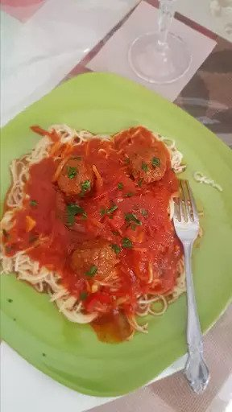

Spaghetti and Meat(less)balls

Description:
A healthy take on a delicious classic. This vegan recipe is sure
to fill your belly and tantalize your taste buds. Mamma Mia!
Ingredients:
- 1 pack of whole wheat spaghetti
- 1 stalk celery
- 1 medium-sized brown onion
- 1 grated carrot
- 1 diced capsicum
- 100g portabella mushrooms
- 2 tbsp olive oil
- 1 jar marinara sauce
- 1 bag Gardein (or similar) vegan meatballs
- 1 block vegan parmesan
Steps:
- Bring water to boil in large pot (using a touch of olive oil and salt to prevent sticking)
- Add pasta and continue boiling for 10-15 minutes, depending on preferred consistency
- Dice onion, mushroom, capsicum and celery
- Heat up oil in a large frying pan or wok
- Saute onion, celery and capsicum
- Add frozen meatballs and carrot
- Cook for ten minutes, then add marinara sauce, cover and cook for 5 more minutes
- Drain the spaghetti and add to frying pan, mixing it through the sauce
- Grate vegan parmesan on top of each serving